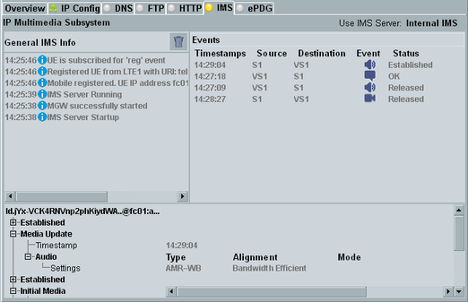
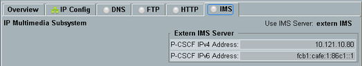

This tab configures and controls the internal IP multimedia subsystem (IMS) server provided by the DAU (option R&S CMW-KAA20 required).
The IMS server allows an IMS client on the DUT to register to the IMS domain. With a registered DUT, you can test voice over IMS and messaging over IMS. For step-by-step instructions, see "Using the IMS Server".
If the internal IMS server is used, the IMS tab shows a log of general IMS information and an event log of calls and message transfers. The lower part shows details for the currently selected line of the event log.

If an external IMS network is used instead of the internal IMS server, only the address of the external P-CSCF is configured at the DAU. In that case, IMS services are transparent to the DAU. Besides the P-CSCF address, the DAU has no information about the IMS network. It does not even know whether the DUT has registered or not.
The DAU sends the P-CSCF address to the DUT via a signaling message, for example via an ACTIVATE PDP CONTEXT ACCEPT message.

While usage of the internal IMS server requires option R&S CMW-KAA20, usage of an external IMS server is possible without this option.
The main view areas, the softkeys and the IMS server settings are described in detail in the following sections.